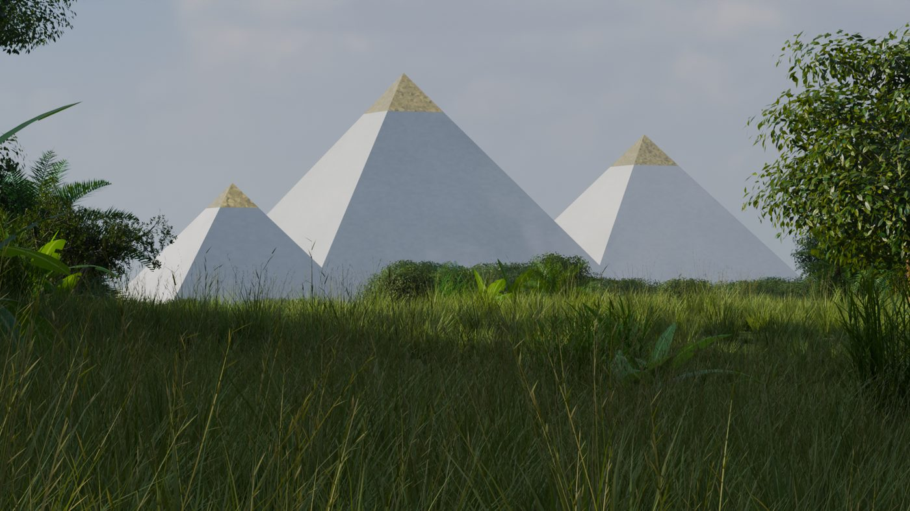
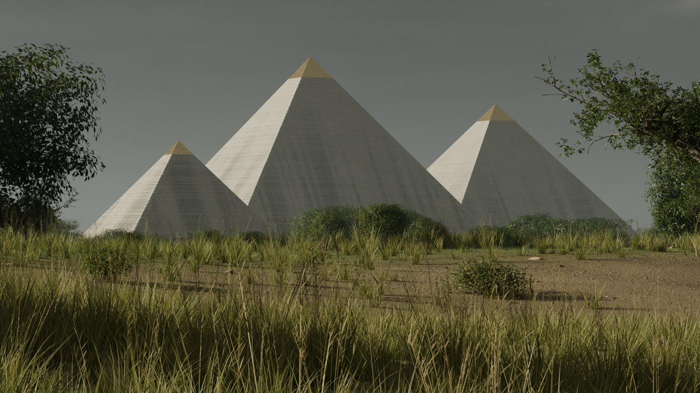
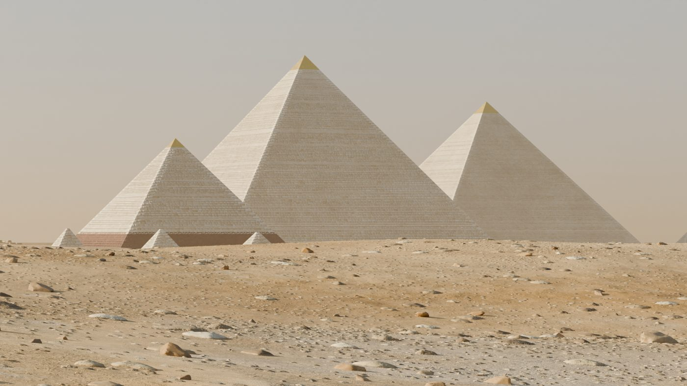
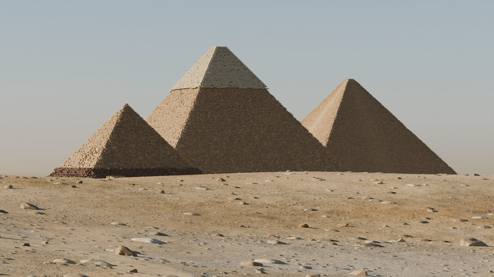
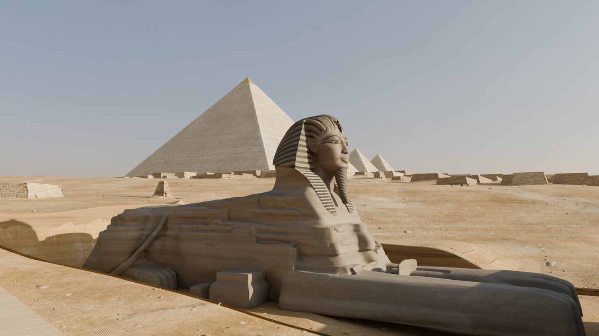
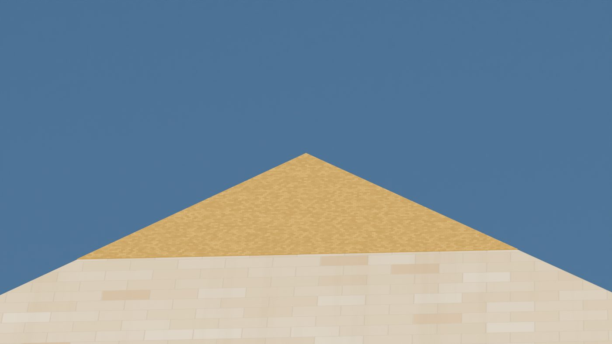

Five eras, one plateau
The same stand, the same survey numbers, five moments. Each era says what it is: survey where it is measured, reconstruction where the holes are filled in and said to be filled, claim where it is drawn as a theory's strongest case so it can be tested, not as the record.

The First Time
c. 10,500 BCE. Polished casing and gold caps in a green Sahara, as the lost-civilisation reading has it.

The long rains
c. 7000 BCE. The water-erosion case for an older Sphinx, under a wetter sky.

Khufu's Giza
c. 2560 BCE. The plateau as built, cased and capped, temples and causeways standing.

Stripped and buried
c. 1800 CE. The casing quarried away for Cairo, the Sphinx in sand to the chest.
Today
2026. The plateau as measured, with the modern city behind it from Open Buildings.
Explore
The walkthrough
Seventeen 360-degree stations, from the desert approach to the King's Chamber, each in every era it stands in. Drag to look, switch the era, step to the next station.
Walk the plateau →
The films
The rollback from today to the First Time, the Sphinx's sequence from lion to excavation, and a flight up the approach as built.
Watch →
The sky alignments
Orion over the three pyramids, the lion facing Leo, the shafts reaching for their stars, each with its stars precessed by the sky engine and the size of its miss stated.
See the sky →What keeps it honest
- Claims tested
- 22
- Within their own tolerance
- 14
- Walkthrough stations
- 17
- Eras
- 5
- Nothing is typed twice.Every number lives once in the measurement database with a cited source. Perimeters, apothems and volumes are computed, never stored, so they cannot drift.
- Claims are data.A claim is its inputs, formulas, target, tolerance and the free choices it needs. Switch the source preset and every result recomputes.
- The sky is computed.Star positions come from the HYG 4.2 catalogue, carried back with Vondrák 2011 precession and pinned in tests to ERFA's values.
- Pyramids from the survey.The three pyramids follow Petrie and later surveys as closely as the sources allow; they are what the claims are about.
- Stand-ins are labelled.Temples, tombs and the Sphinx are placed on their surveyed footprints to about a metre; their forms are visual stand-ins and say so.
- Tiers are never promoted.Each structure is excavated, instrumented, claimed or legendary, and no claim moves one up a tier because it needs it.